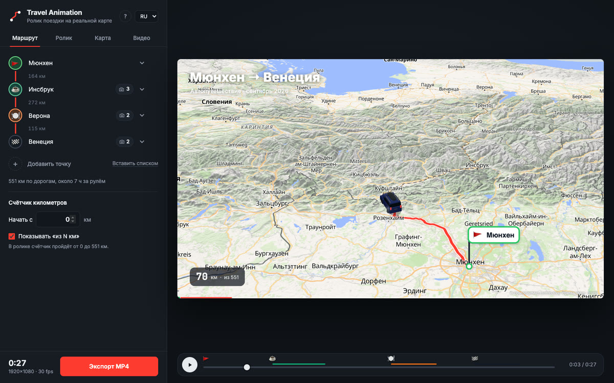
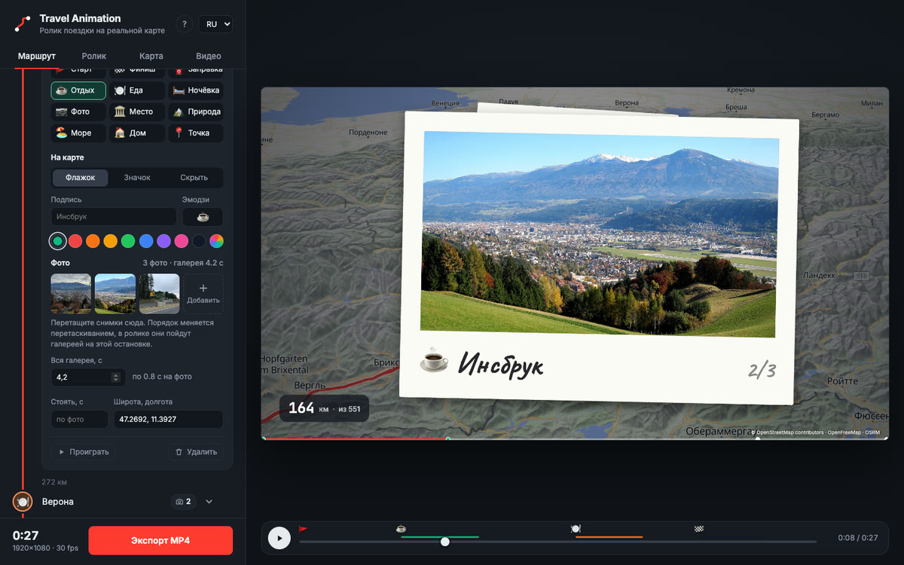
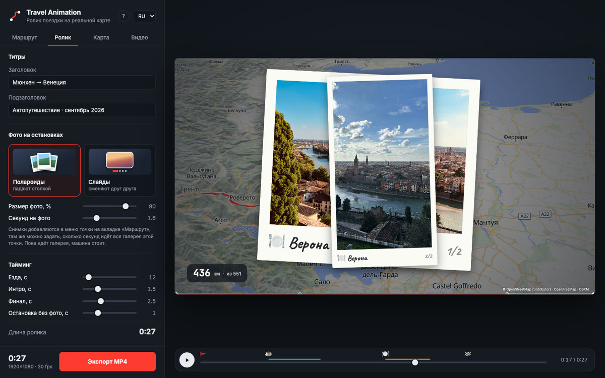
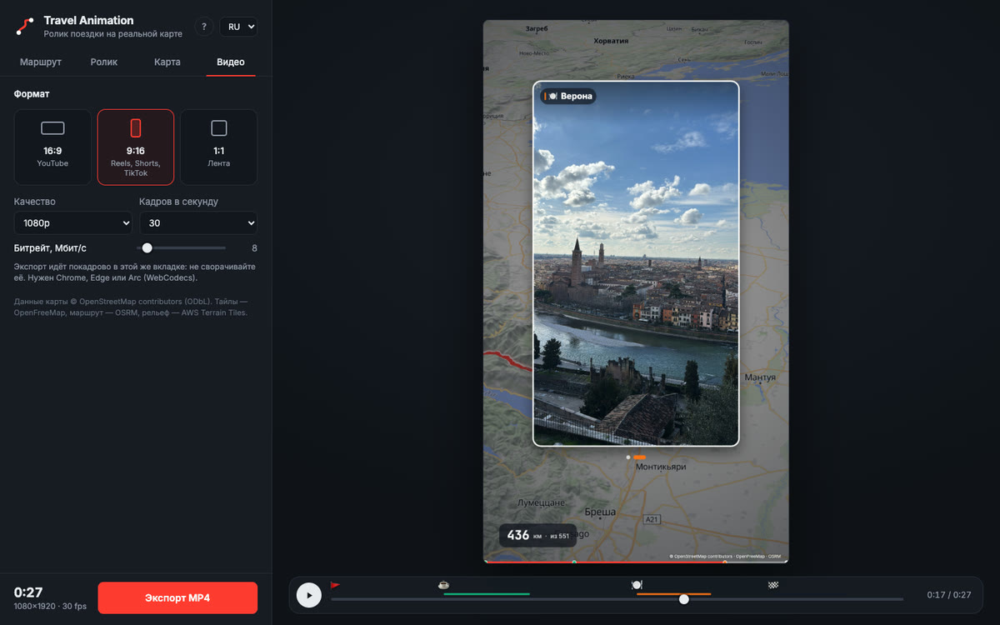

Ролик вашей поездки на анимированной карте
Travel Animation проводит маршрут по настоящим дорогам на объёмной карте, везёт машинку от точки к точке, показывает ваши фото на остановках и сохраняет MP4 для Reels, TikTok или YouTube.
Бесплатно, в браузере, без регистрации.
Работает в Chrome, Edge и Arc на компьютере.
- Без водяных знаков
- До 4K и 60 кадров
- Фото остаются у вас
- Открытый код
Как сделать ролик
Четыре шага, минут десять. Всё сохраняется в браузере: можно закрыть вкладку и вернуться позже.
-
Добавьте точки маршрута
Впишите город или адрес и нажмите Enter. Маршрут построится по настоящим дорогам, а на линии маршрута появятся километры между точками.
Порядок меняется перетаскиванием за ручку справа. Весь список сразу можно вставить кнопкой «Вставить списком».

-
Оформите остановки и добавьте фото
В меню точки выберите тип — заправка, отдых, еда, ночёвка, место, природа, море — и вид на карте: флажок с подписью, круглый значок или без маркера.
Перетащите фото прямо на точку, снимки с iPhone в HEIC тоже подходят. «Вся галерея, с» задаёт, сколько идут фото: семь снимков за четыре секунды пролистаются быстро.

-
Настройте ролик
Выберите вид галереи: полароиды падают стопкой или слайды плавно сменяют друг друга. Подберите размер фото, секунды на фото, титры и тайминг.
Это продолжение длинной поездки? Пусть счётчик начнётся, например, с 2 500 км.

-
Сохраните MP4
Выберите формат 16:9, 9:16 или 1:1 и качество до 4K. Ролик собирается покадрово прямо во вкладке и сохраняется в «Загрузки».
Пока идёт экспорт, не сворачивайте вкладку: браузер ставит фоновые вкладки на паузу.

Что будет в ролике
В видео попадает ровно то, что видно в превью: каждый кадр считается от времени, ничего не теряется и не пропускается.
- Настоящий маршрут
- Дорогу строит OSRM по данным OpenStreetMap. Пройденный путь светится, впереди — пунктир.
- Машинка едет по дороге
- Объёмный хэтчбек или ваша картинка. Камера поворачивает вместе с дорогой, замедляется на остановках и в конце отъезжает на общий план.
- Рельеф
- Тени и объёмные горы с настраиваемой высотой, небо у горизонта при наклоне камеры.
- Остановки с характером
- Флажки или значки с эмодзи, своими подписями и цветами появляются, когда машина подъезжает.
- Галереи фото
- Снимки вылетают из флажка, листаются полароидами или слайдами и улетают обратно, после чего машина едет дальше.
- Титры и счётчик
- Заголовок, подзаголовок, бегущий счётчик километров с любого стартового значения и полоса прогресса с метками остановок.
Одна поездка — для любой площадки
Сохраните ту же поездку в нужном формате: 720p, 1080p или 4K, 30 или 60 кадров в секунду.
Вопросы
Это правда бесплатно?
Да. Без подписки, без водяных знаков и без регистрации. Код открыт под лицензией MIT: пользоваться, менять и размещать свою копию может любой.
Мои фото куда-то загружаются?
Нет. Фото уменьшаются и хранятся в браузере на вашем компьютере. В сервис поиска адресов Nominatim уходят только названия точек, в сервис маршрутов OSRM — координаты.
Какой нужен браузер?
Chrome, Edge или Arc на компьютере. Видео кодируется прямо в браузере через WebCodecs, экспорт проверен в этих браузерах.
Сколько длится экспорт?
Зависит от длины, качества и скорости интернета: каждый кадр ждёт, пока догрузится карта. 30-секундный ролик в 1080p обычно собирается за несколько минут.
Можно сделать вертикальное видео для Reels или TikTok?
Да, выберите 9:16 на вкладке «Видео». Фото в галереях сами подстроятся под вертикальный кадр.
Можно продолжить счётчик с прошлой части поездки?
Да. Впишите стартовый пробег в поле «Начать с» на вкладке «Маршрут», например 2500, и счётчик в ролике пойдёт от него. Надпись «из N км» можно убрать.
Это аналог TravelBoast, Mult.dev или Travel Animator?
Делает такой же тип видео — анимированный маршрут на карте — бесплатно: экспорт MP4 до 4K, без водяных знаков и регистрации, с галереями фото на остановках.